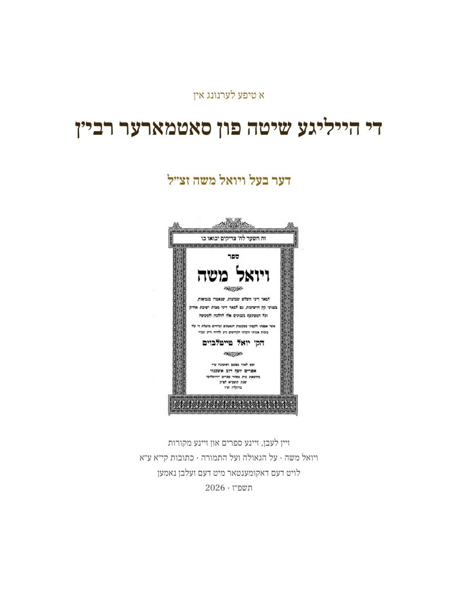

די הייליגע שיטה פון סאטמארער רבי׳ן
דער בעל ויואל משה זצ״ל — א טיפע לערנונג

אינהאלט
- הקדמה: ווי אזוי צו לערנען דעם ספר7
- קאפיטל 1 – דאס לעבן פונעם סאטמארער רבי'ן9
- געבוירן אין סיגעט10
- א הייליגער ייחוס10
- יונגע יארן12
- חתונה און ירושה13
- די ערשטע רבנות׳ן14
- דער קאמף אויף סאטמאר14
- פאמיליע און שטאפל16
- פארטיפונג: טיפער אריין אין דעם קאפיטל17
- קאפיטל 2 – דער היסטארישער הינטערגרונט24
- די אונגארישע יידנטום25
- דער קאנגרעס און די צעטיילונג26
- דער רבי׳ס אייגענע דערציילונג26
- ציוניזם, מזרחי און אגודה27
- רומעניע און צוריק צו אונגארן28
- נאך דער מלחמה29
- פארטיפונג: טיפער אריין אין דעם קאפיטל32
- קאפיטל 3 – די יסודות פון זיין שיטה39
- דער יסוד פון דער שיטה40
- דער גלות א גזירה41
- די דריי שבועות44
- די גאולה נאר דורך משיח46
- די מקורות פון זיין שיטה48
- די היסטארישע אומשטענדן50
- הלכה אויף דער היסטאריע52
- פארטיפונג: טיפער אריין אין דעם קאפיטל53
- קאפיטל 4 (א) – דער ספר ויואל משה (א): די הקדמה און מאמר שלש שבועות59
- דער ספר און זיין געשיכטע60
- די הקדמה61
- די סוגיא אין כתובות64
- בחומה און דחיקת הקץ65
- מהר״ל, הלכה אדער משל67
- רשות, וואלן און געלט69
- פארטיפונג: טיפער אריין אין דעם קאפיטל72
- קאפיטל 4 (ב) – דער ספר ויואל משה (ב): מאמר ישוב ארץ ישראל און מאמר לשון הקודש78
- דאס לאנד און די שפראך79
- מאמר ישוב ארץ ישראל79
- משיח, גלות און זינד82
- מאמר לשון הקודש84
- איין שיטה85
- פארטיפונג: טיפער אריין אין דעם קאפיטל87
- קאפיטל 5 – די שלש שבועות94
- די סוגיא אין כתובות95
- דער רבי׳ס ערשטע קשיא97
- וואס הייסט בחומה99
- די דריטע שבועה101
- פארוואס דער רמב״ם שווייגט104
- די תירוצים און די תשובות105
- די שיטות זייט ביי זייט107
- פארטיפונג: טיפער אריין אין דעם קאפיטל109
- קאפיטל 6 – ציוניזם און די גרינדונג פון דער מדינה115
- צוויי ספרים, איין ציל116
- די שבועות און דחיקת הקץ117
- ווי אלע פעלקער, אן תורה118
- דאס עגל און די תמורה119
- די מלחמה פון 6 טעג120
- פראקטישע פסקים122
- די עדה החרדית123
- ווי ער איז אנדערש123
- פארטיפונג: טיפער אריין אין דעם קאפיטל125
- קאפיטל 7 – תורה, הלכה און השקפה132
- תורה אלס דער מאס133
- הלכה, נישט אגדה133
- אמונה און בטחון135
- תורה און פאליטישע באוועגונגען136
- קנאות און תוכחה137
- פסק און חתם סופר137
- פארטיפונג: טיפער אריין אין דעם קאפיטל139
- קאפיטל 8 – משיח, גאולה און גלות146
- גלות – א גזירה פון הימל147
- תשובה, זכות און ווארטן148
- די תמורה – דער אויסטויש149
- דער טייטש פון אידישע צרות153
- חובות אין גלות153
- אנדערע שיטות155
- פארטיפונג: טיפער אריין אין דעם קאפיטל157
- קאפיטל 9 – דער חורבן און די תקופה דערנאך163
- אונגארן אין יאר 1944164
- דער רבי׳ס וועג פון 1944165
- די קשיא פון דעם חורבן167
- ווי די חסידים פארשטייען169
- קריטיק און תשובות170
- פארטיפונג: טיפער אריין אין דעם קאפיטל172
- קאפיטל 10 – דער אויפבוי פון סאטמאר179
- פון ירושלים קיין אמעריקע180
- קהל, ישיבה און מוסדות181
- חסד, כשרות און צייטונג182
- קרית יואל און די קרענק182
- וואוקס, מנהגים און אומאפהענגיקייט183
- פארטיפונג: טיפער אריין אין דעם קאפיטל186
- קאפיטל 11 – חינוך און דער קומענדיגער דור193
- דער מאמר לשון הקודש194
- די חינוך פון מיידלעך195
- אידיש, קהילה און היינט196
- פארטיפונג: טיפער אריין אין דעם קאפיטל198
- קאפיטל 12 – ספר דברי יואל און זיינע אנדערע לערנונגען205
- דער ספרים־אוצר פון רבינו206
- ויואל משה: די אויפלאגעס207
- על הגאולה ועל התמורה207
- דער אינהאלט פון ספר209
- ווי די ספרים בינדן זיך211
- פארטיפונג: טיפער אריין אין דעם קאפיטל212
- קאפיטל 13 – א פארגלייך מיט אנדערע גדולי ישראל218
- דער מאסשטאב פון פארגלייך219
- חסידישע מנהיגים220
- ליטווישע גדולים221
- רעליגיעזע ציוניסטן222
- עדה החרדית און נטורי קרתא224
- פארטיפונג: טיפער אריין אין דעם קאפיטל226
- קאפיטל 14 – היסטארישע מחלוקות און קריטיק233
- די חורבן־טענה אין דער הקדמה234
- דער קאסטנער באן236
- הלכה אדער אגדה237
- דער קריג פון 1967238
- אגודה און נטורי קרתא238
- ווי שטרענג, און די געלערנטע239
- פארטיפונג: טיפער אריין אין דעם קאפיטל241
- קאפיטל 15 – די סאטמארער קהילה היינט248
- די צוויי הויפן היינט249
- די שיטה און די עדה249
- וואלן און געלט250
- ארץ ישראל און גרעניצן251
- מוסדות און חינוך252
- איינפלוס און מחלוקת253
- פארטיפונג: טיפער אריין אין דעם קאפיטל254
- קאפיטל 16 – די וויכטיגסטע תורה מקורות261
- די פסוקים פון שיר השירים262
- תורה און נביאים262
- גמרא און מדרש264
- די ראשונים266
- די אחרונים268
- פארטיפונג: טיפער אריין אין דעם קאפיטל270
- קאפיטל 17 – וויכטיגע היסטארישע דאקומענטן276
- דער ספר ויואל משה277
- על הגאולה ועל התמורה278
- דער דף און די תשובות278
- דאקומענטן פון 1944279
- צייטונגען און קול קורא280
- דער וועג און די צייטליניע280
- פארטיפונג: טיפער אריין אין דעם קאפיטל282
- קאפיטל 18 – מיספארשטענדענישן און אפטע פראגעס289
- וווינען אין ארץ ישראל290
- מער ווי די שבועות291
- יידן און די באוועגונג291
- די שואה292
- נטורי קרתא און אנדערע גדולים293
- פיקוח נפש, געלט און וואלן294
- משיח און נאך 1967295
- פארטיפונג: טיפער אריין אין דעם קאפיטל297
- קאפיטל 19 – דעם רבי'נס פערזענליכע ירושה303
- תורה און פירערשאפט304
- צדקה פאר די פליטים304
- פערזענליכע יסורים305
- פטירה און ממשיך306
- וואס איז געבליבן307
- פארטיפונג: טיפער אריין אין דעם קאפיטל308
- קאפיטל 20 – א פולשטענדיגע סך-הכל315
- די שיטה אין איין בליק316
- די יסודות פון דער שיטה316
- ראיות און קשיות317
- היסטאריע: פאקט און ספק318
- מחלוקת צווישן היסטאריקער319
- די ווייטערדיגע השפעה320
- די הויפט מקורות320
- א סוף ווארט321
- פארטיפונג: טיפער אריין אין דעם קאפיטל323
- נספח א: די גמרא כתובות ק״י ע״ב – קי״א ע״א329
- נספח ב: רשימה פון אלע ציטאטן330
- רעגיסטער פון באגריפן333
- מראה-מקומות340
- שאלות וואס בלייבן אפן344